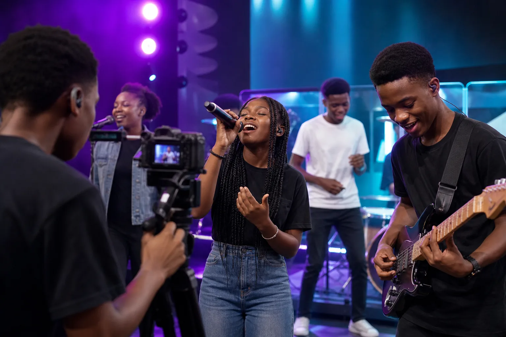

Music & Worship
Vocals, keyboard, guitar, drums, and songwriting for Sunday worship.
God placed unique creativity inside you. Discover, train, and showcase your talents in a supportive Christian community.

Vocals, keyboard, guitar, drums, and songwriting for Sunday worship.
Stage plays, skits, and spoken word for special services and conferences.
Camera operation, video editing, event photography, and storytelling.
Creating event flyers, slides, and visual art for Teens Church.
Devotional writing, announcements, hosting, and public speaking.
Sound engineering, projection, web, and digital ministry tools.